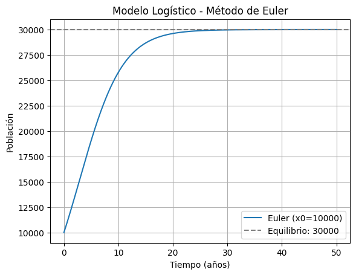
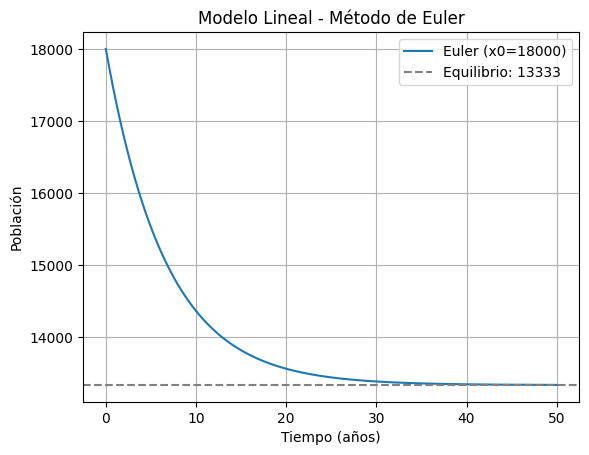

Solución de Modelos Poblacionales#
Este notebook contiene la resolución analítica, gráfica (geométrica) y numérica (método de Euler) para dos modelos de crecimiento poblacional universitaria: logístico y lineal.
import numpy as np
import matplotlib.pyplot as plt
from sympy import symbols, Function, Eq, dsolve, exp, simplify
from sympy.abc import t
Modelo Logístico: $\(\frac{dx}{dt} = 0.25x - \frac{1}{120000}x^2\)$#
Población inicial: 10,000 estudiantes
x = Function('x')
a = 0.25
b = 1/120000
logistic_eq = Eq(x(t).diff(t), a * x(t) - b * x(t)**2)
logistic_sol = dsolve(logistic_eq, x(t))
logistic_sol.simplify()
\[\displaystyle x{\left(t \right)} = - \frac{30000.0 e^{0.25 t}}{C_{1} - e^{0.25 t}}\]
Análisis del equilibrio:
El equilibrio se alcanza cuando $\(\frac{dx}{dt} = 0\)$:
\[0 = ax - bx^2 \Rightarrow x(a - bx) = 0 \Rightarrow x = 0 \text{ o } x = \frac{a}{b} = \frac{0.25}{1/120000} = 30000\]
Por tanto, el equilibrio poblacional es de 30,000 estudiantes.
Solución numérica (Euler) para el modelo logístico#
def euler_logistico(x0, a, b, h, T):
t_vals = np.arange(0, T+h, h)
x_vals = np.zeros(len(t_vals))
x_vals[0] = x0
for i in range(1, len(t_vals)):
x_vals[i] = x_vals[i-1] + h * (a * x_vals[i-1] - b * x_vals[i-1]**2)
return t_vals, x_vals
x0 = 10000
t_vals, x_vals = euler_logistico(x0, 0.25, 1/120000, 0.1, 50)
plt.plot(t_vals, x_vals, label='Euler (x0=10000)')
plt.axhline(30000, color='gray', linestyle='--', label='Equilibrio: 30000')
plt.xlabel('Tiempo (años)')
plt.ylabel('Población')
plt.title('Modelo Logístico - Método de Euler')
plt.legend()
plt.grid(True)
plt.show()

Modelo Lineal: $\(\frac{dx}{dt} = 2000 - 0.15x\)$#
Población inicial: 18,000 estudiantes
x = Function('x')
r = 2000
d = 0.15
linear_eq = Eq(x(t).diff(t), r - d * x(t))
linear_sol = dsolve(linear_eq, x(t))
linear_sol.simplify()
\[\displaystyle x{\left(t \right)} = C_{1} e^{- 0.15 t} + 13333.3333333333\]
Equilibrio poblacional:
Se obtiene igualando $\(\frac{dx}{dt} = 0\)$:
\[0 = 2000 - 0.15x \Rightarrow x = \frac{2000}{0.15} = 13333.33\]
Por tanto, la población se estabiliza en 13,333 estudiantes aproximadamente.
Solución numérica (Euler) para el modelo lineal#
def euler_lineal(x0, r, d, h, T):
t_vals = np.arange(0, T+h, h)
x_vals = np.zeros(len(t_vals))
x_vals[0] = x0
for i in range(1, len(t_vals)):
x_vals[i] = x_vals[i-1] + h * (r - d * x_vals[i-1])
return t_vals, x_vals
x0 = 18000
t_vals_lin, x_vals_lin = euler_lineal(x0, 2000, 0.15, 0.1, 50)
plt.plot(t_vals_lin, x_vals_lin, label='Euler (x0=18000)')
plt.axhline(2000/0.15, color='gray', linestyle='--', label='Equilibrio: 13333')
plt.xlabel('Tiempo (años)')
plt.ylabel('Población')
plt.title('Modelo Lineal - Método de Euler')
plt.legend()
plt.grid(True)
plt.show()
